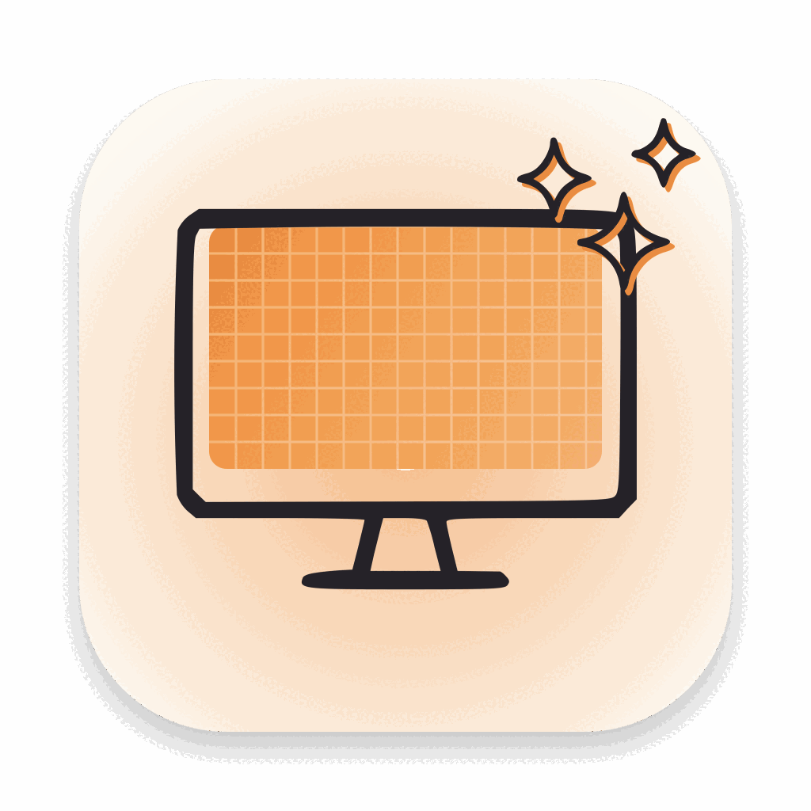

FineDisplay
macOS'un sakladığı HiDPI modlarını aç
Harici ekranın için "1920×1200 gibi görünsün" seçeneği yok mu?
Aslında var. macOS o modu üretmiş, sonra listeden gizlemiş. FineDisplay
listeyi açar, sen seçersin. Sanal ekran yok, mirror yok, sistem dosyası yok,
yeniden başlatma yok. Ücretsiz ve açık kaynak.
macOS 13+ · Apple Silicon ve Intel · Developer ID imzalı + notarize · MIT lisansı · English
★ = Apple'ın ürettiği ama sakladığı modlar. Arzopa Z1RC (16", 2560×1600) örneği.
Native, dolambaçsız
Hayalet ekran yaratıp görüntüyü kopyalamaz. macOS'un kendi mod tablosundaki
satıra geçer; masaüstü 2× çizilir, GPU panele indirir. MacBook'un
dahili Retina ekranındaki mekanizmanın birebir aynısı.
Hatırlar
Seçimini ekrana özel saklar. Ekranı çıkarıp taktığında ya da Mac
uyandığında kendisi yeniden uygular. İstersen girişte açılır.
Komut satırı da var
finedisplay list ile tabloyu gör, finedisplay set 2 1920x1200
ile geç. Script'lere, otomasyona uygun.
Ücretsiz, açık, dürüst
MIT lisansı. Reklam yok, hesap yok, "Pro" yok. Ne yaptığı ve nasıl yaptığı
aşağıda ve kaynak kodda.
Nasıl çalışır?
Her ekranın WindowServer içinde bir mod tablosu var. 2560×1600 bir panel için
macOS 1920×1200 @2x, 2048×1280 @2x gibi modları üretiyor — sonra bunlara
kDisplayModeValidForMirroringFlag bayrağını basıp herkese açık API'den
döndürmüyor. Sistem Ayarları da o yüzden yalnız panel boyutuna kadar olan seçenekleri
gösteriyor. Panel bunu kaldırır; eşik Apple'ın tercihi.
FineDisplay tabloyu WindowServer'ın kendi çağrılarıyla (SkyLight
CGSGetDisplayModeDescriptionOfLength) okur, seçtiğin moda
CGSConfigureDisplayMode ile geçer. WindowServer kabul eder, gerisi macOS'un
standart Retina boru hattı. Apple'ın 13" MacBook Air (aynı 2560×1600 panel) için
gönderdiği override dosyası da aynı bayraklarla aynı çözünürlükleri listeliyor.
Ayrıntılı inceleme günlüğü:
docs/how-it-works.md
Açık konuşalım
- Özel API kullanır. Apple bir gün değiştirebilir. Uygulama açılışta
sembolleri denetler; yoksa çalışmaz, ekranını bozmaz.
- Yalnız var olan modları açar. macOS o ekran için gizli HiDPI modu
üretmediyse FineDisplay uyduramaz.
finedisplay list ★ göstermiyorsa
BetterDisplay'in sanal ekran yolu hâlâ seçenek.
- GPU'ya iş çıkarır. 4096×2560 çizmek bedava değil. Apple Silicon hissetmez;
eski Intel GPU'larda titreme olabilir.
- Sistem Ayarları'ndan mod değiştirirsen bir sonraki bağlantıya kadar o
geçerli olur. Kalıcı olsun istediğin modu FineDisplay'den seç.
Sürüm notları
- İlk yayın: gizli HiDPI modlarını listeleyip geçen menü çubuğu uygulaması.
- Ekran başına seçim hafızası; yeniden bağlanınca ve uyanınca otomatik uygulama.
- Girişte açılma seçeneği;
finedisplay komut satırı aracı.
- Universal binary (Apple Silicon + Intel), macOS 13+. macOS 15.7 Sequoia'da doğrulandı.
Kurulum
- FineDisplay-1.0.0.zip dosyasını indir, aç, FineDisplay.app'i Uygulamalar klasörüne taşı.
- Aç. Uygulama Apple tarafından notarize edildi; uyarısız açılır.
- Menü çubuğundaki monitör simgesine tıkla. Harici ekranın için ★'lı bir HiDPI mod seç. Bitti.
Komut satırı: uygulamanın içinde
FineDisplay.app/Contents/Resources/bin/finedisplay, ya da ayrı zip:
finedisplay-cli-1.0.0.zip
finedisplay list # ekranlar ve modlar; ★ = gizli HiDPI
finedisplay set 2 1920x1200 # 1920×1200 gibi görünsün, 3840×2400 çizilsin
finedisplay set 2 2048x1280 --hz 60
finedisplay apply # kayıtlı seçimleri şimdi uygula
Kaynaktan derleme:
git clone https://github.com/ofbakirci/finedisplay
cd finedisplay
swift build -c release
scripts/build-app.sh # dist/FineDisplay.app
SHA-256 özetleri: SHA256SUMS